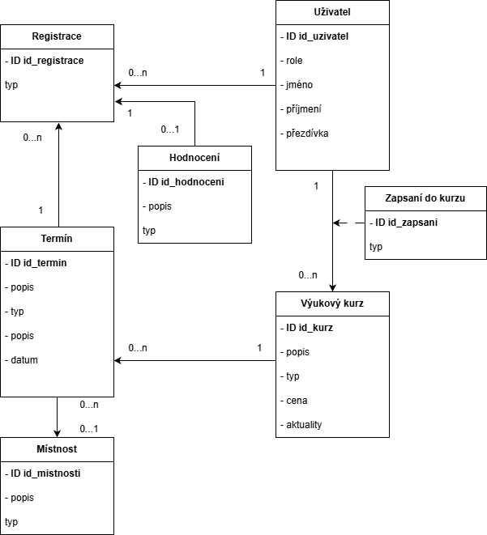

| Login | Heslo | Role |
|---|---|---|
| admin | admin | Administrátor |
| prodavac | prodavac | Prodavač |
| franta | franta | Zákazník |
Přiložte odkaz na komentované video demostrující použití informačního systému. Zaměřte se na případy užití definované zadáním (např. registrace uživatele, správa uživatelů a činnosti jednotlivých rolí). Video nahrajte například na VUT Google Drive, kde ho bude možné přímo spustit z odkazu.
Stručná dokumentace k implementaci, která popisuje, které části projektu (např. PHP skripty) implementují jednotlivé případy použití.

cd ~/ git clone git@github.com/swaggermaty:IIS_25.git
cd ~/IIS_25/backend python3 -m venv .venv . .venv/bin/activate pip install -r requirements.txt2. Inicializace databáze - naplní databázi ukázkovými daty
python3 manage.py makemigrations python3 manage.py migrate python3 manage.py seeder3a. Spuštění backendu pro vývoj na localhostu:
python3 manage.py runserver3b. Spuštění backendu pro běh na produkci:
daphne --bind <adresa> --port <číslo portu> backend_iis.asgi:applicationPoznámka: Program
daphne je standalone server, nejedná se o nástroj pro řízení běhu (jako např. systemctl) - je tedy možné ji spouštět např. jako systémovou službu pod systemd.
cd ~/IIS_25/frontend npm install2a. Spuštění frontendu pro vývoj:
npm start2b. Spuštění frontendu pro běh na produkci:
npm run build serve -s build
Zde popište, které body zadání nejsou implementovány a z jakého důvodu. Např. „Z časových důvodů nebyla implementována správa uživatelů.” Pomůžete tím zrychlit hodnocení, když neimplementované funkce nebudeme muset dlouze hledat.